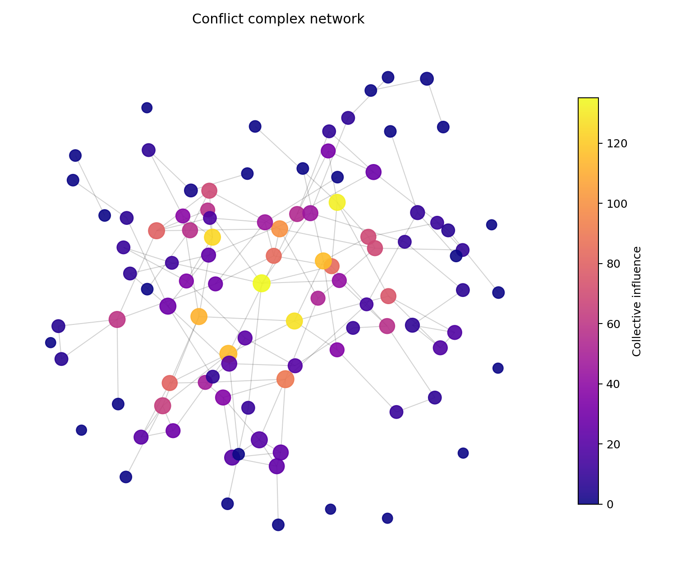
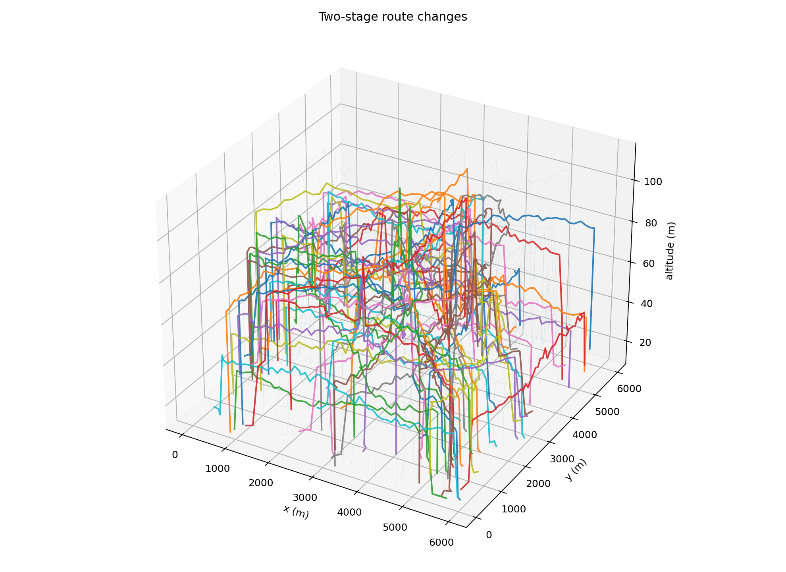

任务四：宏观起飞前调度 —— FATA 优化调度进展
揭榜挂帅项目年度进展汇报 · 低空飞行计划优化调度（宏观层）
学院 Logo
（此处替换）
⚙️ 两阶段调度框架
宏观起飞前全局调度
关键航班识别 → FATA 全局寻优 → 无冲突初始方案
⇄
分层协同接口
全局计划下发 / 实时状态反馈
⇄
微观飞行中实时响应
实时冲突监测 → 动态调度调整
改进 FATA 两阶段调度算法
全机群初始计划
100 架无人机
OD / 速度 / ETD
→
全局冲突探测
初始 215 点 / 132 对
→
复杂网络
关键无人机识别
132 节点 / 132 边 · CI
→
阶段① FATA 寻优
地面等待 + 速度调整
阶段② 局部 A* 改航
兜底消解残留冲突
→
无冲突初始
调度方案
通过改进 FATA 与两阶段优化机制，实现低空飞行计划宏观调度流程：经复杂网络识别关键飞行计划并实施兼顾冲突、延误与风险的多目标寻优，最终获得无冲突初始调度方案。
宏观起飞前调度实验评估

① 关键计划识别
- 初始冲突 215 点 / 132 对（无不确定性 128 点 / 84 对）
- 冲突网络 132 节点 / 132 边
- CI 识别 Top-10 关键航班
- 99 号核心枢纽（度 6，CI 135）

② 两阶段调度优化
- FATA 寻优（等待 + 速度）→ 局部 A* 改航兜底
- 215→4（消除率 98.1%），冲突对 132→4
- 调整 56 架、延误 29 架，风险增比 7.6×10⁻⁵
- 安全模式保证全局单调不劣化
🤖微观 · Contract-MARL 多智能体强化学习流程
Contract:
普通机冲突让行 VIP
冲突解除后恢复飞行
→
Contract2
Interface
编译器
→
Monitor
→
→
MARL 多智能体
强化学习流程
→
Metrics
评估
↺ Metrics 评估结果反馈至 Monitor
📋微观 · 关键计划识别
- 基于 Contract 契约识别飞行优先级：VIP 机优先，普通机冲突让行
- 冲突接触解除后自动恢复飞行，保障运行连续性
⚙️微观 · 实时调度优化
- MARL 多智能体强化学习：Agent Reward 奖励信号 + Critic State 评判
- Metrics 评估航路恢复、冲突解除等指标并闭环反馈优化